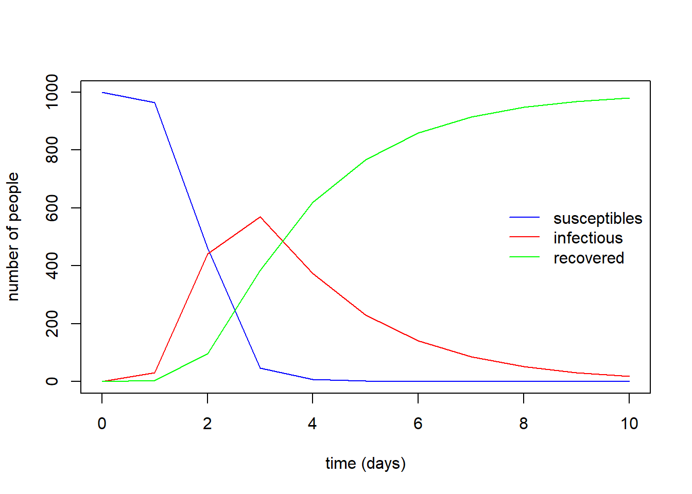

Basic Disease Model - SIR
SIR model
Compartmental diagram
Three variables are defined in our model which are i) S Susceptibles, ii) I Infectious and iii) R Recovered. Susceptibles become infected at a rate equal to the product of an infectious contact rate \(\beta\) and the number of infectious I. Infectious people recover at a rate \(\gamma\) 
Formulation
\[
\frac{dS}{dt} = -\beta IS\\
\frac{dI}{dt} = \beta IS -\gamma I\\
\frac{dR}{dt} = \gamma I
\]
Based on the formulation, basic reproduction number, \(R_{0}\) is defined as below: \[
R_{0}= \frac{\beta}{\gamma}N
\] ## Numerical Solution of SIR model in R As mentioned before, to obtain numerical solution of differential equation in R, we are required to use the function ode() under deSolve package. To be able to use the deSolve package, you need to load it:
library(deSolve)Step 1: Define SIR model in R
We need to define the differential equations of SIR model in script. We create a function to define our SIR model:
sir_equations <- function(time, variables, parameters) {
with(as.list(c(variables, parameters)), {
dS <- -beta * I * S
dI <- beta * I * S - gamma * I
dR <- gamma * I
return(list(c(dS, dI, dR)))
})
}We use the with() function in the function sir_equations(). The with() works on lists only, not on vectors.
Step 2: Defining value for the parameters
In the SIR model defined above, 2 parameters are included in the model which are \(\beta\) and \(\gamma\). We need to assign value to these two parameters:
parameters_values <- c(
beta = 0.004, # infectious contact rate (/person/day)
gamma = 0.5 # recovery rate (/day)
)Step 3: Defining initial values for the variables
Since the SIR model is an initial value problem (IVP), we need to assign the initial value to these variables:
initial_values <- c(
S = 999, # number of susceptibles at time = 0
I = 1, # number of infectious at time = 0
R = 0 # number of recovered (and immune) at time = 0
)Step 4: Defining the time points of simulation
We want to know the values of our SIR model variables at these time points:
time_values <- seq(0,10) #daysStep 5: Solving the SIR model numerically
We have defined 4 objects:
ls()## [1] "initial_values" "parameters_values" "sir_equations"
## [4] "time_values"sir_equations## function(time, variables, parameters) {
## with(as.list(c(variables, parameters)), {
## dS <- -beta * I * S
## dI <- beta * I * S - gamma * I
## dR <- gamma * I
## return(list(c(dS, dI, dR)))
## })
## }parameters_values## beta gamma
## 0.004 0.500initial_values## S I R
## 999 1 0time_values## [1] 0 1 2 3 4 5 6 7 8 9 10If everything are fine, now we need to use ode() function from delSove() package to solve our model numerically:
sir_values_1 <- ode(
y = initial_values,
times = time_values,
func = sir_equations,
parms = parameters_values
)The numerical solution of our SIR model is:
sir_values_1## time S I R
## 1 0 999.0000000 1.00000 0.000000
## 2 1 963.7055761 31.79830 4.496125
## 3 2 461.5687749 441.91575 96.515480
## 4 3 46.1563480 569.50418 384.339476
## 5 4 7.0358807 373.49831 619.465807
## 6 5 2.1489407 230.12934 767.721720
## 7 6 1.0390927 140.41085 858.550058
## 8 7 0.6674074 85.44479 913.887801
## 9 8 0.5098627 51.94498 947.545162
## 10 9 0.4328913 31.56515 968.001960
## 11 10 0.3919173 19.17668 980.431400To use these value for further analytical steps, we can covert sir_values_1 into data frame.
sir_values_1 <- as.data.frame(sir_values_1)
sir_values_1## time S I R
## 1 0 999.0000000 1.00000 0.000000
## 2 1 963.7055761 31.79830 4.496125
## 3 2 461.5687749 441.91575 96.515480
## 4 3 46.1563480 569.50418 384.339476
## 5 4 7.0358807 373.49831 619.465807
## 6 5 2.1489407 230.12934 767.721720
## 7 6 1.0390927 140.41085 858.550058
## 8 7 0.6674074 85.44479 913.887801
## 9 8 0.5098627 51.94498 947.545162
## 10 9 0.4328913 31.56515 968.001960
## 11 10 0.3919173 19.17668 980.431400After we converted sir_values_1 into data frame, now we can use with() function to make our life easier:
with(sir_values_1, {
# plotting the time series of susceptibles:
plot(time, S, type = "l", col = "blue",
xlab = "time (days)", ylab = "number of people")
# adding the time series of infectious:
lines(time, I, col = "red")
# adding the time series of recovered:
lines(time, R, col = "green")
})
# adding a legend:
legend("right", c("susceptibles", "infectious", "recovered"),
col = c("blue", "red", "green"), lty = 1, bty = "n") The value of the \(R_{0}\) is
(999 + 1) * parameters_values["beta"] / parameters_values["gamma"]## [1] 8Exercise
Writing a SIR model simulator
Use the code examples above to write a sir_1() function that takes
- parameter values (\(\beta\) and \(\gamma\))
- initial values of (S,I,R)
- time points
as input arguments to run the SIR model and returns a data frame of time series as an output as below:
sir_1 <- function(beta, gamma, S0, I0, R0, times) {
require(deSolve) # for the "ode" function
# the differential equations:
sir_equations <- function(time, variables, parameters) {
with(as.list(c(variables, parameters)), {
dS <- -beta * I * S
dI <- beta * I * S - gamma * I
dR <- gamma * I
return(list(c(dS, dI, dR)))
})
}
# the parameters values:
parameters_values <- c(beta = beta, gamma = gamma)
# the initial values of variables:
initial_values <- c(S = S0, I = I0, R = R0)
# solving
out <- ode(initial_values, times, sir_equations, parameters_values)
# returning the output:
as.data.frame(out)
}sir_1(beta = 0.004,gamma = 0.5,S0=999,I0=1,R0=0,times = seq(0,10))## time S I R
## 1 0 999.0000000 1.00000 0.000000
## 2 1 963.7055761 31.79830 4.496125
## 3 2 461.5687749 441.91575 96.515480
## 4 3 46.1563480 569.50418 384.339476
## 5 4 7.0358807 373.49831 619.465807
## 6 5 2.1489407 230.12934 767.721720
## 7 6 1.0390927 140.41085 858.550058
## 8 7 0.6674074 85.44479 913.887801
## 9 8 0.5098627 51.94498 947.545162
## 10 9 0.4328913 31.56515 968.001960
## 11 10 0.3919173 19.17668 980.431400